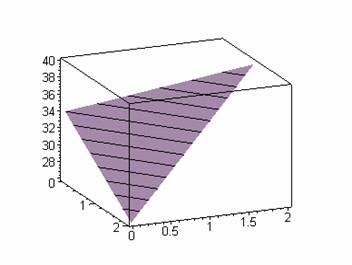

1. ЛИНЕЙНЫЕ ИНТЕРПОЛЯЦИОННЫЕ ПОЛИНОМЫ
Рассмотрим особенности построения линейных интерполяционных соотношений, соответствующих симплекс-элементам [4].
> restart:with(linalg):
Warning, the protected names norm and trace have been redefined and unprotected
Ниже на рисунках изображены:
- одномерный симплекс-элемент, представляющий собой прямолинейный отрезок длины L с двумя узлами, по одному на каждом конце;
![[Maple OLE 2.0 Object]](images/s_11.gif)
- двумерный симплекс-элемент. Это треугольник с прямолинейными сторонами и тремя узлами, по одному в каждой вершине;
![[Maple OLE 2.0 Object]](images/s_12.gif)
- трехмерный симплекс-элемент. Он представляет собой тетраэдр. Четыре его узла обозначены индексами i,j,k,l, причем обход узлов i,j,k осуществляется в том порядке, как они записаны, против часовой стрелки. Узел l расположен в вершине, находящейся вне плоскости узлов i,j,k.
![[Maple OLE 2.0 Object]](images/s_13.gif)
В общем (трехмерном) случае линейный интерполяционный полином для симплекс-элемента имеет вид [2]:

(В двумерном случае z = 0, а в одномерном - z = 0 и y = 0.)
Определим коэффициенты

с помощью известных значений искомой функции в узловых точках.
> 
из решения матричного уравнения
 =
= 
где С - следующая матрица
> ![C := matrix([[1, X[1], Y[1], Z[1]], [1, X[2], Y[2],...](images/s_19.gif)
Объединив
в матрицу В множители при  в интерполяционнной формуле
в интерполяционнной формуле
> 
получим матрицу так называемых функций формы (базисных функций), вычисляемую как
> 
Тогда интерполяционный полином для искомой функции может быть получен следующей операцией
> 
Рассмотрим трехмерный симплекс-элемент, используемый для аппроксимации распределения непрерывной функции внутри тетраэдра.
Вначале определяем массивы численных данных с известными координатами четырех узлов (см. рис):
> X:=[1,0,2,1]:Y:=[2,0,0,0]: Z:=[1,0,0,3]:
Отобразим этот тетраэдр на экране дисплея
> with(plots):
polygonplot3d([[X[1],Y[1],Z[1]],
[X[2],Y[2],Z[2]],
[X[3],Y[3],Z[3]],
[X[4],Y[4],Z[4]],
[X[2],Y[2],Z[2]],
[X[1],Y[1],Z[1]]],
axes=boxed,orientation=[-160,-100], shading=XY,style=PATCHCONTOUR,light=[20,10,5,3,1],lightmodel='light3');
Warning, the name changecoords has been redefined
![[Maple Plot]](images/s_114.gif)
Пусть значениями функции в соответствующих узловых точках будут
> 
Тогда искомый интерполяционный полином примет вид
> phi;

Во внутренней точке с координатами (1, 0.5, 1) имеем значение функции
> subs(x=1,y=0.5,z=1,phi);

Аналогично получим полином, соответствующий двумерному симплекс-элементу:
> P := [Phi[1], Phi[2], Phi[3]]:
> C:=matrix([[1,X[1],Y[1]],
[1,X[2],Y[2]],
[1,X[3],Y[3]] ]):
> B:=([1,x,y]):
> N:=multiply(B,inverse(C)):
> phi:=multiply(N,P):
Определяем массивы численных данных:
координаты узлов -
> X:=[1,0,2]:Y:=[2,0,0]:
Значения функции в соответствующих узловых точках
> Phi:=[40,34.,26]:
Искомый интерполяционный полином будет иметь вид
> phi;

В отличие от трехмерного случая, полученную аппроксимирующую функцию можно представить наглядно:
> with(plots):
polygonplot3d([
[X[1],Y[1],Phi[1]],
[X[2],Y[2],Phi[2]],
[X[3],Y[3],Phi[3]]],axes=boxed,style=PATCHCONTOUR);

В точке с координатами (1, 0.5) имеем значение
> subs(x=1,y=0.5,phi);

Теперь для одномерного симплекс-элемента:
> restart:with(linalg):
Warning, the protected names norm and trace have been redefined and unprotected
> P := [Phi[1], Phi[2]]:
> C:=matrix([[1,X[1]],
[1,X[2]] ]):
> B:=([1,x]):
> N:=multiply(B,inverse(C)):
> phi:=multiply(N,P):
Массивы численных данных:
координаты узлов -
> X:=[1,0]:
значения функции в соответствующих узловых точках
> Phi:=[40,34.]:
Искомый интерполяционный полином:
> phi;

Изображаем его на графике:
> plot(phi,x=0..1);
![[Maple Plot]](images/s_122.gif)
В точке с координатой х = 0.5 имеем значение искомой функции
> subs(x=0.5,phi);

Замечание
В данной работе интерполяционные соотношения использованы при рассмотрении скалярной величины. При интерполировании векторных величин, например перемещений в каждом узле необходимо определить более одной неизвестной (степени свободы). В этом случае векторную величину можно представить ее компонентами, которые рассматриваются как неизвестные скалярные величины. Каждый узел будет содержать одну, две или три неизвестные в зависимости от того, какая задача рассматривается - одномерная, двумерная или трехмерная. Причем в одномерной задаче представления векторной и скалярной величин внутри элемента совпадают, так как в обоих случаях в каждом узле отыскивается только одна неизвестная:

В двумерной, трехмерной, или в общем случае n-мерной задаче необходимо аппроксимировать каждую компоненту неизвестной, например:

Упражнение
Узловые значения температуры для треугольного симплекс-элемента
равны Ф=130, Ф=100, Ф=125.
Выясните, где изотерма 125 пересекает границы элемента.